Por dónde empezar
- Abre la Guía de Confección y Transformación de Patrones: te explica cómo imprimir los patrones y cómo tomar las medidas.
- Elige un patrón de la colección y bájalo en Carta por partes (para imprimir en casa) o en Plotter (una hoja a tamaño real).
- Imprime al 100% («Tamaño real») y mide el cuadrado de control: tiene que dar 10 × 10 cm.
- Corta tu primera toile de prueba antes de usar la tela definitiva.
Guías de confección
La orientación de costura, patronaje, ajuste y acabados, y los regalos I, II y III.
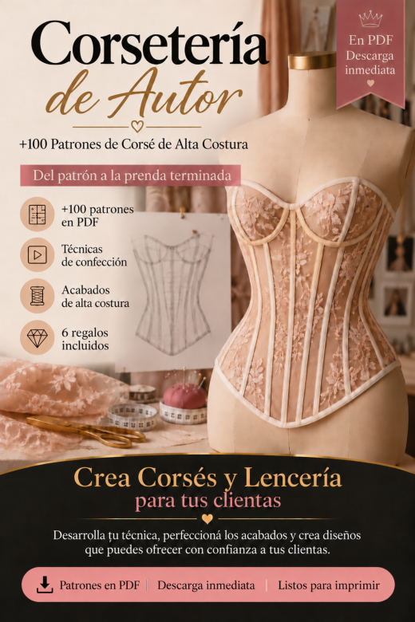
Guía de Confección y Transformación de PatronesImprimir y armar los patrones, tomar medidas, adaptar el patrón a otras medidas, la toile, costura de precisión, acabados y presentación de prendas a medida.
Abrir PDF- Guía para Trabajar el Tul Transparente
Estabilizar, cortar y coser el tul con menos estiramientos y más control.
Abrir PDF - Lista de Verificación de Acabados
Los detalles que suelen pasarse por alto, para revisar antes de fotografiar o entregar.
Abrir PDF 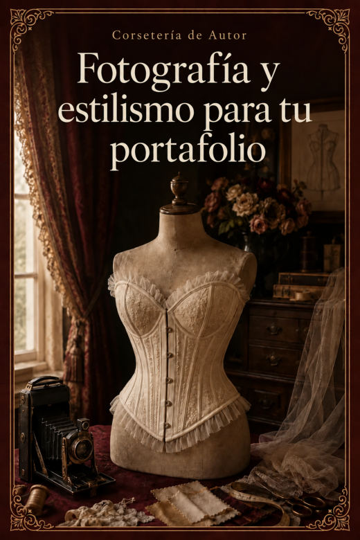
Fotografía y Estilismo para tu PortafolioLuz, fondo, las 8 fotos de cada pieza, estilismo y cómo armar tu portafolio con el celular.
Abrir PDF
No hay patrones con ese nombre. Prueba con otra palabra.
Corsetería de Autor · 110 patrones de corsé
110 patrones en PDF · cada uno en hoja carta por partes y en plóter a tamaño real.
Cinturón corsé 8
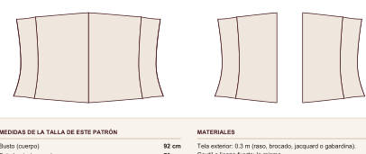
CORSÉ 001Cinturón Corsé · 4 Paneles · Borde Recto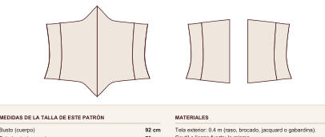
CORSÉ 002Cinturón Corsé · 4 Paneles · Borde en Punta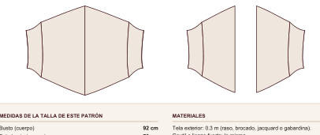
CORSÉ 003Cinturón Corsé · 4 Paneles · Borde Curvo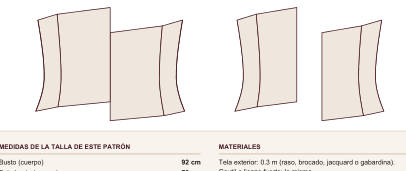
CORSÉ 004Cinturón Corsé · 4 Paneles · Borde Asimétrico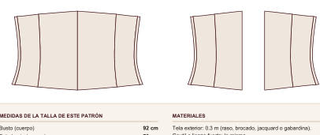
CORSÉ 005Cinturón Corsé · 5 Paneles · Borde Recto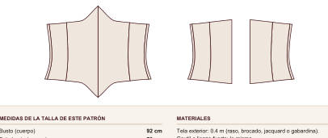
CORSÉ 006Cinturón Corsé · 5 Paneles · Borde en Punta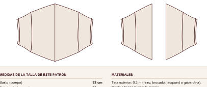
CORSÉ 007Cinturón Corsé · 5 Paneles · Borde Curvo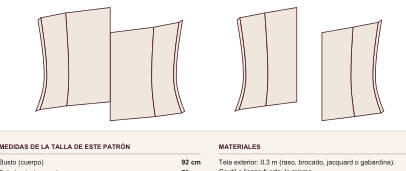
CORSÉ 008Cinturón Corsé · 5 Paneles · Borde Asimétrico
Cinturilla 12
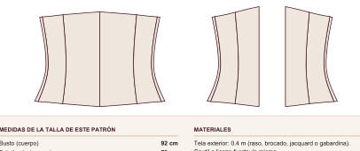
CORSÉ 009Cinturilla · 5 Paneles · Borde Recto- CORSÉ 010Cinturilla · 5 Paneles · Borde en Punta
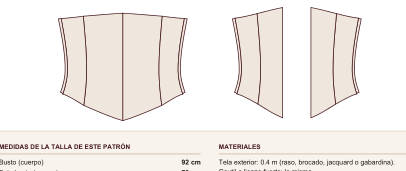
CORSÉ 011Cinturilla · 5 Paneles · Borde Curvo- CORSÉ 012Cinturilla · 5 Paneles · Borde con Cadera Larga
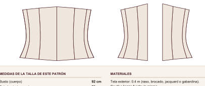
CORSÉ 013Cinturilla · 6 Paneles · Borde Recto- CORSÉ 014Cinturilla · 6 Paneles · Borde en Punta
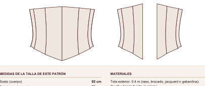
CORSÉ 015Cinturilla · 6 Paneles · Borde Curvo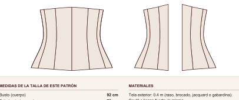
CORSÉ 016Cinturilla · 6 Paneles · Borde con Cadera Larga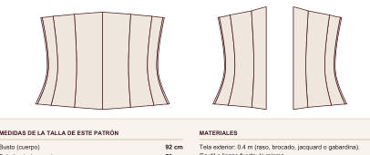
CORSÉ 017Cinturilla · 7 Paneles · Borde Recto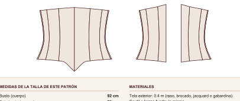
CORSÉ 018Cinturilla · 7 Paneles · Borde en Punta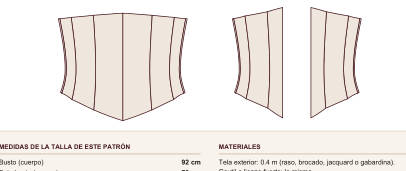
CORSÉ 019Cinturilla · 7 Paneles · Borde Curvo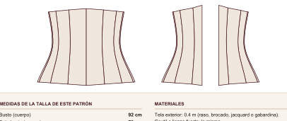
CORSÉ 020Cinturilla · 7 Paneles · Borde con Cadera Larga
Bajo busto clásico 16
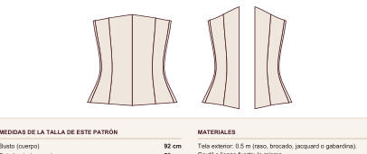
CORSÉ 021Bajo Busto Clásico · 5 Paneles · Borde Recto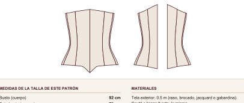
CORSÉ 022Bajo Busto Clásico · 5 Paneles · Borde en Punta- CORSÉ 023Bajo Busto Clásico · 5 Paneles · Borde Curvo sobre Cadera
- CORSÉ 024Bajo Busto Clásico · 5 Paneles · Borde en Punta Doble
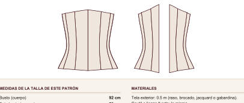
CORSÉ 025Bajo Busto Clásico · 6 Paneles · Borde Recto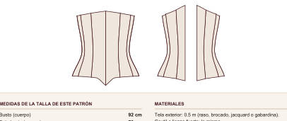
CORSÉ 026Bajo Busto Clásico · 6 Paneles · Borde en Punta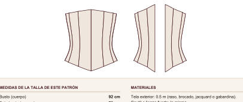
CORSÉ 027Bajo Busto Clásico · 6 Paneles · Borde Curvo sobre Cadera- CORSÉ 028Bajo Busto Clásico · 6 Paneles · Borde en Punta Doble
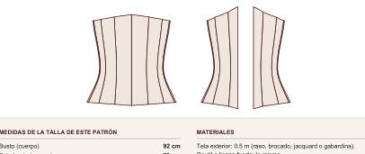
CORSÉ 029Bajo Busto Clásico · 7 Paneles · Borde Recto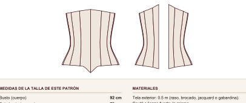
CORSÉ 030Bajo Busto Clásico · 7 Paneles · Borde en Punta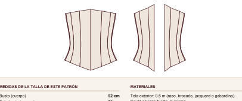
CORSÉ 031Bajo Busto Clásico · 7 Paneles · Borde Curvo sobre Cadera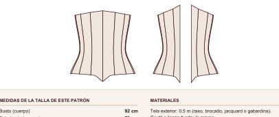
CORSÉ 032Bajo Busto Clásico · 7 Paneles · Borde en Punta Doble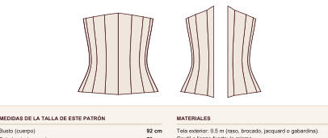
CORSÉ 033Bajo Busto Clásico · 8 Paneles · Borde Recto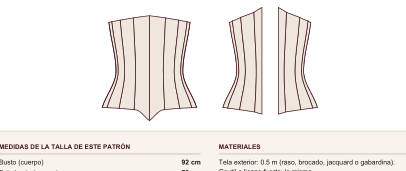
CORSÉ 034Bajo Busto Clásico · 8 Paneles · Borde en Punta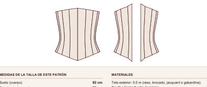
CORSÉ 035Bajo Busto Clásico · 8 Paneles · Borde Curvo sobre Cadera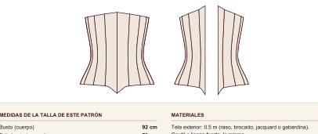
CORSÉ 036Bajo Busto Clásico · 8 Paneles · Borde en Punta Doble
Bajo busto victoriano 10
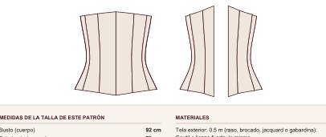
CORSÉ 037Bajo Busto Victoriano · 6 Paneles · Reducción 6 cm- CORSÉ 038Bajo Busto Victoriano · 6 Paneles · Reducción 8 cm
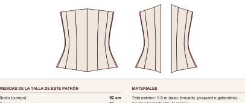
CORSÉ 039Bajo Busto Victoriano · 7 Paneles · Reducción 6 cm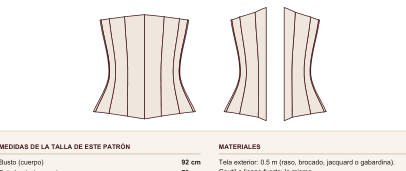
CORSÉ 040Bajo Busto Victoriano · 7 Paneles · Reducción 8 cm- CORSÉ 041Bajo Busto Victoriano · 8 Paneles · Reducción 6 cm
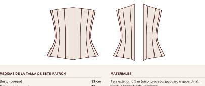
CORSÉ 042Bajo Busto Victoriano · 8 Paneles · Reducción 8 cm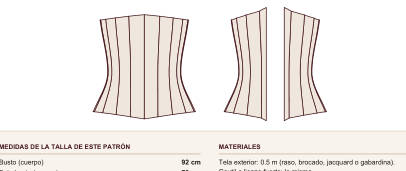
CORSÉ 043Bajo Busto Victoriano · 9 Paneles · Reducción 6 cm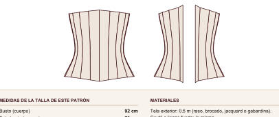
CORSÉ 044Bajo Busto Victoriano · 9 Paneles · Reducción 8 cm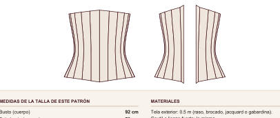
CORSÉ 045Bajo Busto Victoriano · 10 Paneles · Reducción 6 cm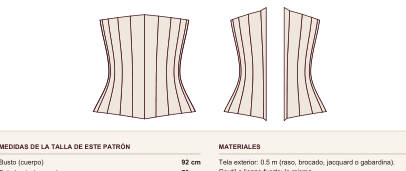
CORSÉ 046Bajo Busto Victoriano · 10 Paneles · Reducción 8 cm
Bajo busto eduardiano 8
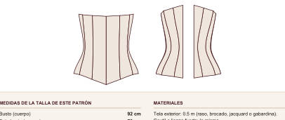
CORSÉ 047Bajo Busto Eduardiano de Frente Recto · 6 Paneles · Borde Recto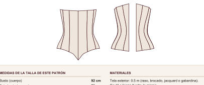
CORSÉ 048Bajo Busto Eduardiano de Frente Recto · 6 Paneles · Borde en Punta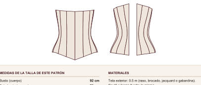
CORSÉ 049Bajo Busto Eduardiano de Frente Recto · 7 Paneles · Borde Recto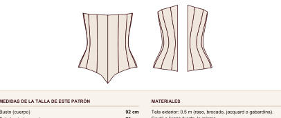
CORSÉ 050Bajo Busto Eduardiano de Frente Recto · 7 Paneles · Borde en Punta- CORSÉ 051Bajo Busto Eduardiano de Frente Recto · 8 Paneles · Borde Recto
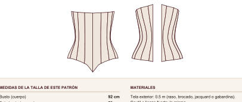
CORSÉ 052Bajo Busto Eduardiano de Frente Recto · 8 Paneles · Borde en Punta- CORSÉ 053Bajo Busto Eduardiano de Frente Recto · 9 Paneles · Borde Recto
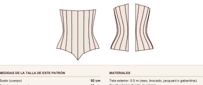
CORSÉ 054Bajo Busto Eduardiano de Frente Recto · 9 Paneles · Borde en Punta
Bajo busto largo 8
- CORSÉ 055Bajo Busto Largo hasta la Cadera · 6 Paneles · Busk
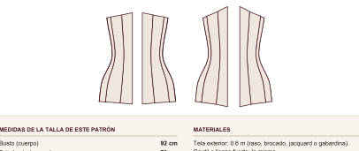
CORSÉ 056Bajo Busto Largo hasta la Cadera · 6 Paneles · Cordón Adelante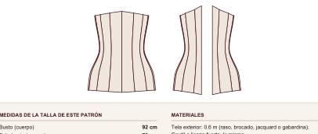
CORSÉ 057Bajo Busto Largo hasta la Cadera · 7 Paneles · Busk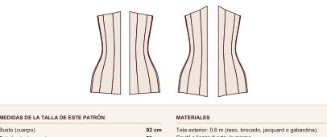
CORSÉ 058Bajo Busto Largo hasta la Cadera · 7 Paneles · Cordón Adelante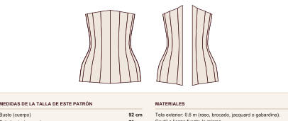
CORSÉ 059Bajo Busto Largo hasta la Cadera · 8 Paneles · Busk- CORSÉ 060Bajo Busto Largo hasta la Cadera · 8 Paneles · Cordón Adelante
- CORSÉ 061Bajo Busto Largo hasta la Cadera · 9 Paneles · Busk
- CORSÉ 062Bajo Busto Largo hasta la Cadera · 9 Paneles · Cordón Adelante
Sobre busto · escote recto 10
 CORSÉ 063Sobre Busto Escote Recto · 6 Paneles · Busk
CORSÉ 063Sobre Busto Escote Recto · 6 Paneles · Busk- CORSÉ 064Sobre Busto Escote Recto · 6 Paneles · Cordón Adelante
- CORSÉ 065Sobre Busto Escote Recto · 7 Paneles · Busk
- CORSÉ 066Sobre Busto Escote Recto · 7 Paneles · Cordón Adelante
 CORSÉ 067Sobre Busto Escote Recto · 8 Paneles · Busk
CORSÉ 067Sobre Busto Escote Recto · 8 Paneles · Busk- CORSÉ 068Sobre Busto Escote Recto · 8 Paneles · Cordón Adelante
- CORSÉ 069Sobre Busto Escote Recto · 9 Paneles · Busk
- CORSÉ 070Sobre Busto Escote Recto · 9 Paneles · Cordón Adelante
- CORSÉ 071Sobre Busto Escote Recto · 10 Paneles · Busk
- CORSÉ 072Sobre Busto Escote Recto · 10 Paneles · Cordón Adelante
Sobre busto · escote corazón 10
- CORSÉ 073Sobre Busto Escote Corazón · 6 Paneles · Borde Recto
- CORSÉ 074Sobre Busto Escote Corazón · 6 Paneles · Borde en Punta
- CORSÉ 075Sobre Busto Escote Corazón · 7 Paneles · Borde Recto
- CORSÉ 076Sobre Busto Escote Corazón · 7 Paneles · Borde en Punta
- CORSÉ 077Sobre Busto Escote Corazón · 8 Paneles · Borde Recto
- CORSÉ 078Sobre Busto Escote Corazón · 8 Paneles · Borde en Punta
- CORSÉ 079Sobre Busto Escote Corazón · 9 Paneles · Borde Recto
- CORSÉ 080Sobre Busto Escote Corazón · 9 Paneles · Borde en Punta
- CORSÉ 081Sobre Busto Escote Corazón · 10 Paneles · Borde Recto
- CORSÉ 082Sobre Busto Escote Corazón · 10 Paneles · Borde en Punta
Sobre busto · escote en V 8
- CORSÉ 083Sobre Busto Escote en V Suave · 6 Paneles
- CORSÉ 084Sobre Busto Escote en V Profunda · 6 Paneles
- CORSÉ 085Sobre Busto Escote en V Suave · 7 Paneles
- CORSÉ 086Sobre Busto Escote en V Profunda · 7 Paneles
- CORSÉ 087Sobre Busto Escote en V Suave · 8 Paneles
- CORSÉ 088Sobre Busto Escote en V Profunda · 8 Paneles
- CORSÉ 089Sobre Busto Escote en V Suave · 9 Paneles
- CORSÉ 090Sobre Busto Escote en V Profunda · 9 Paneles
Sobre busto · balconet 8
- CORSÉ 091Sobre Busto Balconet · 6 Paneles · Borde Recto
- CORSÉ 092Sobre Busto Balconet · 6 Paneles · Borde en Punta
- CORSÉ 093Sobre Busto Balconet · 7 Paneles · Borde Recto
- CORSÉ 094Sobre Busto Balconet · 7 Paneles · Borde en Punta
- CORSÉ 095Sobre Busto Balconet · 8 Paneles · Borde Recto
- CORSÉ 096Sobre Busto Balconet · 8 Paneles · Borde en Punta
- CORSÉ 097Sobre Busto Balconet · 9 Paneles · Borde Recto
- CORSÉ 098Sobre Busto Balconet · 9 Paneles · Borde en Punta
Corselete con tirantes 6
- CORSÉ 099Corselete con Tirantes Finos · 6 Paneles
 CORSÉ 100Corselete con Tirantes Anchos · 6 Paneles
CORSÉ 100Corselete con Tirantes Anchos · 6 Paneles CORSÉ 101Corselete con Tirantes Finos · 7 Paneles
CORSÉ 101Corselete con Tirantes Finos · 7 Paneles CORSÉ 102Corselete con Tirantes Anchos · 7 Paneles
CORSÉ 102Corselete con Tirantes Anchos · 7 Paneles- CORSÉ 103Corselete con Tirantes Finos · 8 Paneles
 CORSÉ 104Corselete con Tirantes Anchos · 8 Paneles
CORSÉ 104Corselete con Tirantes Anchos · 8 Paneles
Cordón adelante y atrás 6
- CORSÉ 105Bajo Busto con Cordón Adelante y Atrás · 6 Paneles
- CORSÉ 106Sobre Busto con Cordón Adelante y Atrás · 6 Paneles
- CORSÉ 107Bajo Busto con Cordón Adelante y Atrás · 7 Paneles
- CORSÉ 108Sobre Busto con Cordón Adelante y Atrás · 7 Paneles
- CORSÉ 109Bajo Busto con Cordón Adelante y Atrás · 8 Paneles
- CORSÉ 110Sobre Busto con Cordón Adelante y Atrás · 8 Paneles
Regalo IV · Paquete de 20 Patrones de Brasieres y Bralettes
20 patrones en PDF · cada uno en hoja carta por partes y en plóter a tamaño real.
Triángulo 6
- BRASIER 001Bralette Triángulo Clásico
 BRASIER 002Bralette Triángulo con Banda Ancha
BRASIER 002Bralette Triángulo con Banda Ancha BRASIER 003Bralette Triángulo con Espalda Cruzada
BRASIER 003Bralette Triángulo con Espalda Cruzada BRASIER 004Bralette Triángulo con Tirantes Dobles
BRASIER 004Bralette Triángulo con Tirantes Dobles BRASIER 005Bralette Triángulo de Encaje con Festón
BRASIER 005Bralette Triángulo de Encaje con Festón- BRASIER 006Bralette Cortina con Lazo
Halter 2
 BRASIER 007Bralette Halter Atado al Cuello
BRASIER 007Bralette Halter Atado al Cuello- BRASIER 008Bralette Halter con Banda
Escote en V y cruzados 2
- BRASIER 009Bralette Escote en V Profundo
- BRASIER 010Bralette Cruzado Adelante
Longline 2
- BRASIER 011Bralette Longline Recto
- BRASIER 012Bralette Longline en V
Bandeau 2
- BRASIER 013Bandeau Liso
- BRASIER 014Bandeau con Frunce Central
Con copa armada 4
- BRASIER 015Brasier Balconet sin Aro (Copa de 3 Piezas)
- BRASIER 016Brasier de Copa con Costura Vertical sin Aro
- BRASIER 017Brasier de Copa Entera sin Aro
- BRASIER 018Brasier de Encaje con Copa en 2 Piezas
Deportivos 2
- BRASIER 019Brasier Deportivo Espalda Nadadora
- BRASIER 020Brasier Deportivo Espalda Cruzada
Regalo V · Paquete de 20 Patrones de Bodies
20 patrones en PDF · cada uno en hoja carta por partes y en plóter a tamaño real.
Bodies 20
 BODY 001Body Escote Redondo · Espalda Cerrada
BODY 001Body Escote Redondo · Espalda Cerrada- BODY 002Body Escote Redondo · Espalda Cavada
- BODY 003Body Escote Redondo · Espalda Cruzada
- BODY 004Body Escote Redondo · Espalda Abierta en Gota
- BODY 005Body Escote en V · Espalda Cerrada
- BODY 006Body Escote en V · Espalda Cavada
- BODY 007Body Escote en V · Espalda Cruzada
 BODY 008Body Escote en V · Espalda Abierta en Gota
BODY 008Body Escote en V · Espalda Abierta en Gota- BODY 009Body Escote Cuadrado · Espalda Cerrada
- BODY 010Body Escote Cuadrado · Espalda Cavada
- BODY 011Body Escote Cuadrado · Espalda Cruzada
 BODY 012Body Escote Cuadrado · Espalda Abierta en Gota
BODY 012Body Escote Cuadrado · Espalda Abierta en Gota BODY 013Body Escote Corazón · Espalda Cerrada
BODY 013Body Escote Corazón · Espalda Cerrada- BODY 014Body Escote Corazón · Espalda Cavada
- BODY 015Body Escote Corazón · Espalda Cruzada
- BODY 016Body Escote Corazón · Espalda Abierta en Gota
 BODY 017Body Escote Halter · Espalda Cerrada
BODY 017Body Escote Halter · Espalda Cerrada- BODY 018Body Escote Halter · Espalda Cavada
- BODY 019Body Escote Halter · Espalda Cruzada
- BODY 020Body Escote Halter · Espalda Abierta en Gota
Regalo VI · Paquete de 20 Patrones de Pantaletas: Hilo Dental, Tanga, Brasileña y Boxer
20 patrones en PDF · cada uno en hoja carta por partes y en plóter a tamaño real.
Hilo dental 5
 PANTALETA 001Hilo Dental Clásico
PANTALETA 001Hilo Dental Clásico- PANTALETA 002Hilo Dental de Tiro Alto
- PANTALETA 003Hilo Dental con Tiras Laterales
- PANTALETA 004Hilo Dental de Encaje con Frente Doble
- PANTALETA 005Hilo Dental Brasileño en V
Tangas 5
- PANTALETA 006Tanga Clásica de Tiro Bajo
- PANTALETA 007Tanga de Tiro Medio
- PANTALETA 008Tanga con Laterales Anchos
- PANTALETA 009Tanga Brasileña Cavada
- PANTALETA 010Tanga con Tiras Dobles
Brasileñas 5
- PANTALETA 011Brasileña Clásica
- PANTALETA 012Brasileña de Tiro Alto
 PANTALETA 013Brasileña Cavada
PANTALETA 013Brasileña Cavada- PANTALETA 014Brasileña con Laterales de Encaje
- PANTALETA 015Brasileña Retro de Cintura Alta
Boxer 5
- PANTALETA 016Boxer Clásico
- PANTALETA 017Boxer de Tiro Alto
- PANTALETA 018Boxer con Pierna Recta
 PANTALETA 019Boxer de Encaje con Festón
PANTALETA 019Boxer de Encaje con Festón- PANTALETA 020Boxer Short
Próximo paso
Guarda esta página en favoritos: es tu acceso de por vida a la colección. Elige tu primer patrón, imprímelo y empieza por la toile.